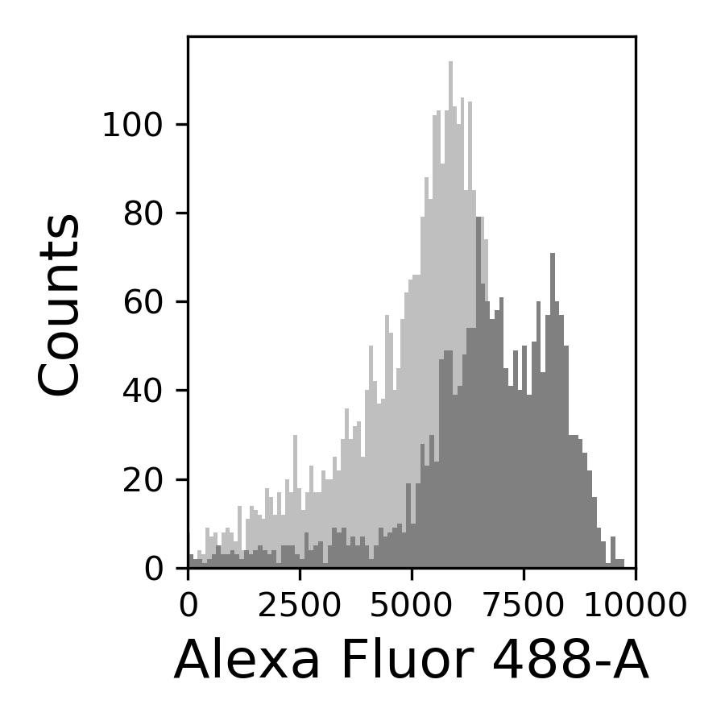
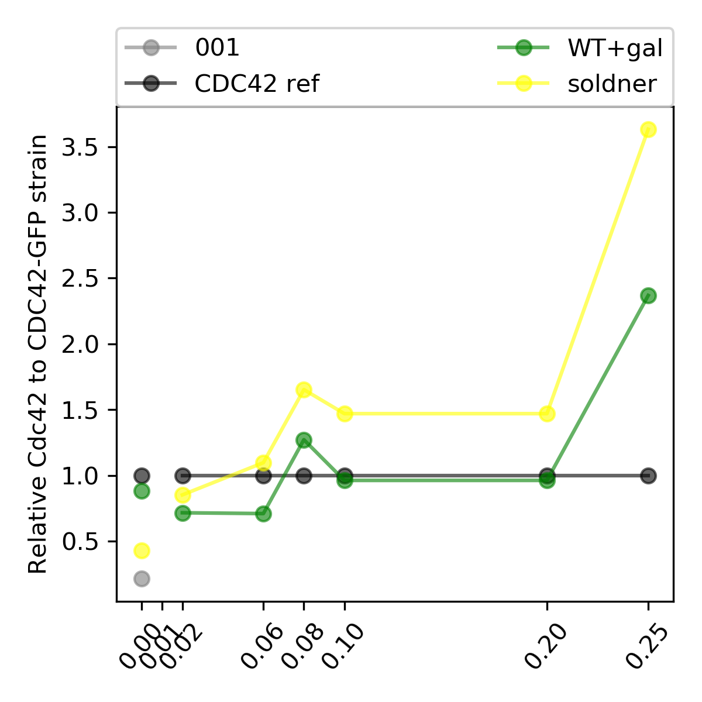
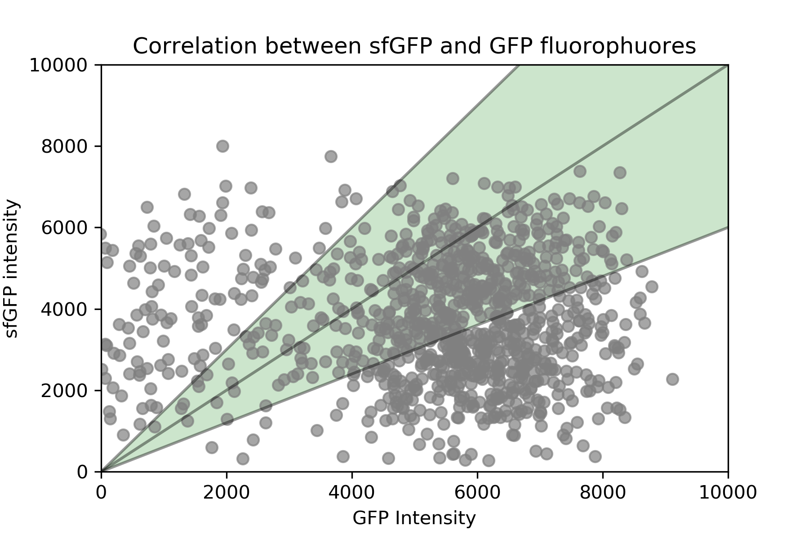

5. Title: FACs experiment with the same conditions as the microscopy done to quantify the cell sizes for the pAl1-Cdc42-sfGFP strains (III).¶
5.1. Date¶
04022020-06022020
5.2. Objective¶
To be able to compare the results of the FACs with the microscopy conditions. And also to see if we get a difference in expression when increasing the incubation temperature to 36C.
5.3. Method¶
Insights from the Gal1 promoter
The location in the genome at which the gal promoter was inserted can have a strong effect on the expression pattern of the gal promoter (Ramon feedback). Hence we should not compare different studies of the Gal1 promoter with ours if the integration in the genome is in a different location and also if it is a plasmid or not.
We should compare systematically the Gal1p expression pattern of the strains that has the sfGFP (Werner strains) and the mneonGreen ones (Ramon/Miranda strains), because they have the same type of genomic integration of the Gal1 promoter.
[x] Ask Reza for his data with WT+mneongreen to compare with mine
Look for the postprocessing results, in this folder
Follow the same protocol as I followed for the microscopy measurements
 {#fig:experimental-design}
{#fig:experimental-design}
Planned procedure
15 hours of incubation in 2% Gal +2% Raff (i.e. overnight incubation from 17:00 to 08:00 )
Washing step with CSM+2% Raff+0%Gal to the respective Galactose (at 08:00-09:00) concentrations. Incubate
Measure FACs after 24 hours of incubation . (next day of the washing step)
Use the references cdc42-GFP ywkd038 and ywkd001 in 2% dextrose +2% Raff, in CSM-met and CSM respectively.
In order to have the same conditions as the microscopy done in December 2018 , where we quantify the cell sizes after 24 hours of incubation in X% galactose (after a washing step from a firsto overnight incubation in 2% galactose), the media has to have 4x the normal amount of aminoacids. This maybe has an impact on the regulation of the promoter.
The new plate design for this is shown in @fig:plate-design
 {#fig:plate-design width=50% height=50% }
{#fig:plate-design width=50% height=50% }
The strain ywkd024 will be measured to still compared with previous measurements done by Marit, in 2017.
Strains :
ywkd024 : RWS119 Wedlich-Söldner Lab collection a W303 can 1 1-100 his3 11,15 Galpr-myc-GFP-CDC42 YipLac204-MET-CLN2 cln1\(\Delta\)::HisG, cln2\(\Delta\), cln3\(\Delta\)::HisG (strain to compare with ywkd065(sfGFP))
ywkd065a New YWKD055c W303 URA-Gal1pr-sfGFP-Cdc42 sandwich (pWKD011 integrated) leu2 3,112 his 3 11,15
ywkd069 : New YWKD055c a W303 bem1\(\Delta\)::KanmX URA-Gal1pr-sfGFP-Cdc42 sandwich (pWKD011 integrated) MFAprHIS3 3,112 11,15
ywkd070 : YWKD070a,b,c New YWKD055c a W303 bem1\(\Delta\)::KanmX bem3\(\Delta\)::clonNAT URA-Gal1pr-sfGFP-Cdc42 sandwich (pWKD011 integrated) MFAprHIS3 3,112 11,15
ywkd038: RWS1421 Wedlich-Söldner Lab collection a W303 can1 1-100 his3 11,15 CDC42pr-myc-GFP-CDC42 YipLac204-MET-CLN2 cln1\(\Delta\)::HisG, cln2\(\Delta\), cln3\(\Delta\)::HisG (Reference for the native CDC42 expression)
Settings of the FACs experiment
Equipment-Model: BDFACSCelesta
Lasers: Alexa Fluor 488 at 495V
Flow Rate: 2ul/sec
Sample volume: 130ul
Plate: 96 well plate with flat bottom
# of events per well: 10000
FSC threshold:20000
FSC voltage: 407V
SSC volatge: 275V
Mixing volume: 65ul
Mixing speed: 200ul/sec
Nr. of mixes: 5
Actual procedure
1st Incubation , at 9:00 in 04022020 in 2% Gal.
With 10ul of thawed and vortexed glycerol stocks, because last experiment had some trouble with the incubation from this step, so perhaps I did not put many cells in the tubes from the frozen glycerol stock.
Remarks from 1st incubation:
ywkd070 grew very miserably
ywkd069 was denser than ywkd070
2nd incubation , at 11:45 in 05022020 in the respective galactose concentrations.
remarks from 2nd incubation:
I miscalculated the amount of ywkd024 cells to equally distribute among galactose concentrations, and I could not reach the 2% gal tube, so I took from the already prepared 0.2% gal tube into the 2%. So, I expect a small amount of cells from 2% gal, when measuring, because of this.
Experiment : at 13:00
Before the experiment:
I had to dilute ywkd065 and ywkd024 20X because of their high density after 24h of incubation.
I did not dilute the 0% case of ywkd065 niether the 2% case for ywkd024.
I diluted them with CSM and CSM-met without any galactose, basically because it was not necessary taking into acount the time from the dilution (12:30) to the measuring (13:00).
Even for the case of 2 hours difference, because they are not the first to be measured in the FACs machine due to the well position , no degradation should occur via degradation of Cdc42-GFP or CDC42-sfGFP or via division.
5.4. Results¶
5.4.1. Plate data¶
 {#fig:plate}
{#fig:plate}
5.4.2. Box plots¶
 {#fig:boxplots width=60% height=60%}
{#fig:boxplots width=60% height=60%}
5.4.3. Measure per strain¶
 {#fig:024-hist width=30%}
{#fig:024-hist width=30%}
{#fig:065-hist width=30%}
{#fig:069-hist width=30%}
5.4.4. Cdc42 relative expression¶
{#fig:cdc42-scalling-005 width=50%}
5.4.5. Correlation between the GFP and sfGFP fluorophuores¶
{#fig:correlation width=50%}
5.5. Conclusion¶
In this experiment the WT+pGal behaves more as expected than in experiment 004.
The ywkd070 behaves very weirdly, it did not grow form the first incubation. I dont know why. Also ywkd038 and ywk001 have very miserably growth, in 36C.
The correlation between GFP and sfGFP, observed in @fig:correlation, shows that when we are dividing the pGal-sfGFP expresion with the native CC42-GFP we are underestimating the final result because the GFP intensity is slightly brighter than the sfGFP.